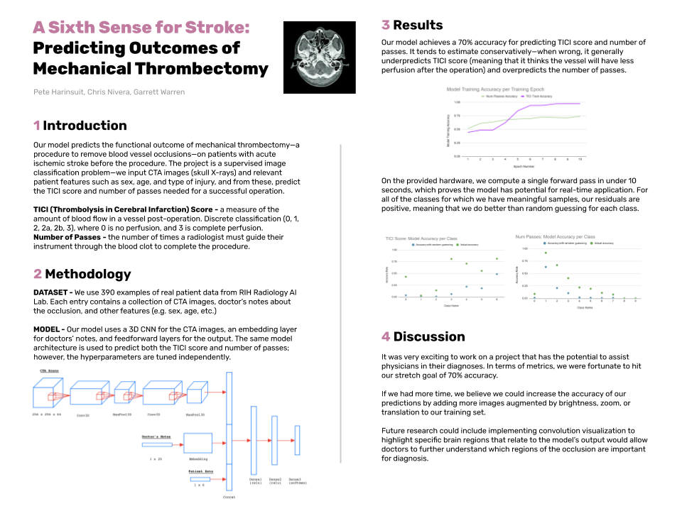

A Sixth Sense for Stroke
A deep learning model that predicts how a mechanical thrombectomy, the procedure that removes the clot in an acute ischemic stroke, will go before it is performed. From a patient's CT angiography scan and the doctor's notes, it predicts the TICI score (how much blood flow is restored) and the number of passes the radiologist will need to clear the clot.
Final project for Brown's Deep Learning course (CSCI 1470), built on about 390 anonymized patient scans from the Rhode Island Hospital radiology AI lab. The data stayed on a hospital machine, and we worked on it over remote desktop.
Each scan is a stack of 64 slices, so the model uses a 3D convolutional network for the images, an embedding layer for the doctor's notes on the occlusion, and a vector of the other patient features. The three are concatenated and passed through dense layers. Written in Python with TensorFlow.
It reached about 70% accuracy on both predictions and beat proportional random guessing on every class with meaningful samples. When it is wrong it tends to be conservative: it underpredicts blood flow and overpredicts the number of passes.
